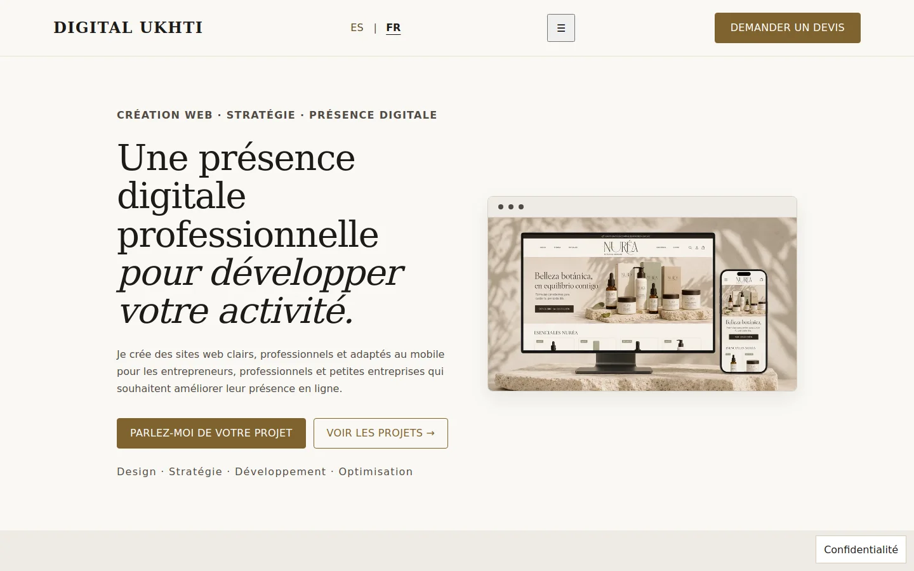
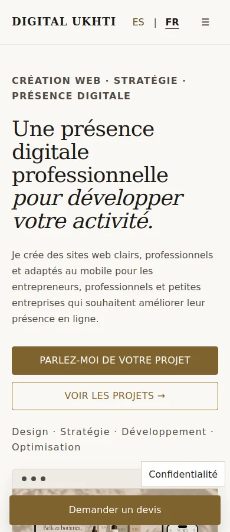

ÉTUDE DE CAS · SITE DE LA MARQUE
Digital Ukhti
Identité, design et développement d’un site de services pour entrepreneurs, professionnels et petites entreprises.
LE PROJET
Construire une présence digitale claire et professionnelle.
Digital Ukhti propose la création et le développement de sites web, l’analyse de la présence digitale, le SEO et l’étude de marché et de la concurrence. Son site s’adresse aux entrepreneurs, professionnels et petites entreprises.
L’objectif est d’expliquer clairement chaque service, de présenter les projets et de permettre aux personnes intéressées de demander un devis dès le premier contact.
DIRECTION VISUELLE
Une identité sobre, moderne et reconnaissable.
La direction visuelle associe le noir, le blanc, l’ivoire et le beige. Le doré foncé met en valeur les boutons et les liens dans une composition sobre, avec des espaces généreux et une hiérarchie visuelle claire.
IDENTITÉ
Marque
Développement du concept visuel de Digital Ukhti et création d’une identité adaptée aux supports digitaux.
Palette
Des neutres chaleureux comme base et du doré foncé pour les boutons et les liens, avec du contraste et une cohérence entre les pages.
Typographie
Cormorant Garamond pour les titres et Inter pour les textes, la navigation et les boutons : deux typographies alliant caractère éditorial et lisibilité.

SYSTÈME VISUEL
Une palette conçue pour une identité élégante et digitale.
#1C1A18
#FAF8F4
#EFEBE5
#80632F
DIGITAL UKHTI
Identité · Stratégie · Design digitalTYPOGRAPHIE
Élégance éditoriale + clarté digitale.
Cormorant Garamond
Titres · Phrases mises en valeur · Éléments éditoriaux
Inter
Navigation · Textes · Boutons · Contenu digital
CRÉATION WEB
Conçue pour présenter les services simplement.
La page d’accueil associe un message principal, deux appels à l’action et un aperçu du portfolio. Les sections alternent les fonds et les compositions pour présenter les projets, les services et la méthode de travail.
Les pages de services mènent au formulaire de contact avec le service sélectionné. Sur mobile, un bouton fixe facilite le contact pendant la navigation.
EXPÉRIENCE DIGITALE
Une expérience conçue pour être claire sur chaque écran.

Navigation claire
Une structure simple et intuitive qui permet de trouver rapidement chaque partie du projet et d’accéder au contenu en quelques étapes.
Design responsive
Une expérience optimisée pour ordinateur, tablette et mobile, qui conserve la lisibilité, la hiérarchie visuelle et une navigation agréable sur chaque écran.
Identité cohérente
La typographie, les couleurs, les espaces et la composition forment un système visuel unique pour conserver une image professionnelle et reconnaissable sur l’ensemble du site.
DÉVELOPPEMENT
Structure
Développement d’une structure sémantique claire, prête à accueillir de futures évolutions.
Design
Des styles personnalisés et un système visuel cohérent pour les ordinateurs et les appareils mobiles.
Adaptation
Un design optimisé pour une expérience cohérente sur ordinateur, tablette et mobile.
RÉSULTAT
Une base digitale prête à se développer.
Le résultat est un site de services avec une identité propre, un portfolio, des ressources et un parcours clair vers le contact. Il est développé en HTML, CSS et JavaScript, avec des images WebP et un design adapté aux ordinateurs, tablettes et mobiles.
Retour au portfolio